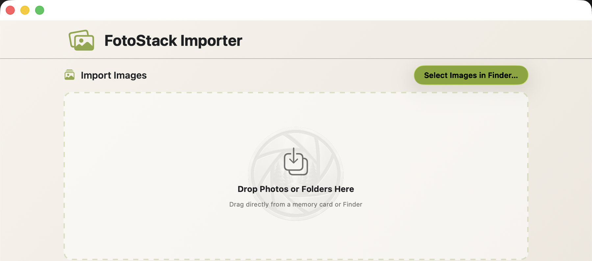

About This Manual
This manual explains how to work with the FotoStack Importer - from selecting images to safe, sorted import. The app is aimed at photographers who want to transfer images from different sources into a consistent archive without sorting them manually first.
Button names may change slightly in later versions of the app. The work processes described remain unaffected.
About the App

FotoStack Importer 1.0
The FotoStack Importer imports photos into a freely selectable destination folder, reads the recording data from the image information and organizes the files according to their actual capture date. Optionally, the app recognizes and groups focus series and HDR series.
The FotoStack Importer is not only suitable for new imports from memory cards, but also for subsequently sorting existing photo collections. Since the app does not move the original files but creates copies in the destination folder, an existing collection can be safely restructured.
Key features include:
- Drag & drop import of individual images and folders
- recursive search in subfolders
- Sorting by EXIF capture date
- four selectable folder structures according to capture date
- Duplicate detection via file content
- Adding incomplete existing focus and HDR series
- Transferring and updating sidecar files during folder import
- Apple
AAEsidecars for edited Apple/iPhone images - Focus bracketing and HDR bracketing detection
- Import preview with customizable detection before copying
- short help texts directly on important controls
- freely selectable prefixes and separators for created series folders
- selectable appearances and accent colors
- Cancel and undo an import
Important Terms
| term | Meaning |
|---|---|
| Import | The app creates copies in the destination folder. Files are not moved from the source. |
| Focus Series | Multiple shots of the same subject with the focus point gradually changing. |
| Focus Stack | A focus series recognized by the app and grouped together in a folder. |
| HDR series | Multiple shots of the same subject with different exposures. |
| prefix | Freely selectable text at the beginning of a created series folder, for example Macro01. |
| EXIF data | Image information, including the capture date and time. |
| Sidecar File | File accompanying an image in which image editing programs store settings, for example .xmp or .dop. |
| Tooltip / Help | Short help text that appears when the mouse pointer briefly stops over a control element. |
Import Safely
Original files are retained
The FotoStack Importer copies the selected images into the destination folder. Original files are not changed, moved or deleted. This also applies to images on memory cards, external drives, and source folders on the Mac.
Important: An import does not replace your own backup. Before formatting a memory card or manually deleting files, keep important originals on at least one additional storage medium.
What the Import Changes
If necessary, the app creates folders and new file copies only in the selected destination folder. The original structure of the source folder is not retained; The new storage depends on the structure selected under Settings › Folders, the capture date and the activated recognition functions.
Select images
Add images and folders using drag and drop
Drag individual images or entire folders from the Finder into the app's import field. These can be new images from a memory card or existing photo folders on the Mac or an external drive. When a folder is added, the app searches it for supported image files - including all subfolders it contains.
Example of a source:
`text Import Folder ├── IMG_001.jpg ├── IMG_002.jpg └── Vacation ├── IMG_003.jpg └── IMG_004.jpg `
All images found will be taken into account. You can then add additional individual images or folders; the app processes all files together.
`text Import Area ├── Folder “Vacation” ├── IMG_005.jpg └── Folder “Macro” `
The order in which images or folders are added does not affect subsequent sorting.
Selection via Finder
Alternatively, you can use the “Select images in Finder…” button to select individual images or folders. This selection can also be combined with files and folders added later.
Automatic detection in the main window
Under “Automatic detection” the main window shows a compact card for focus series and HDR series. There you can switch both detections on or off directly. A brief summary states the minimum number of images currently used or the permitted HDR series sizes as well as the maximum time interval.
If necessary, you can use “Advanced Focus Settings” and “Advanced HDR Settings” to show the associated controls and input fields. The areas are collapsed when you start so that the most common work steps remain clear in the main window. All values are also available in the import preview and can be adjusted there for the immediately following import.
Perform an Import
1. Add images and/or folders to the import field. 2. Set the destination folder. 3. If necessary, select the desired folder structure under Settings › Folderss. Without change, the app uses Year → Capture Date. 4. If necessary, activate focus bracketing and/or HDR detection under “Automatic detection”. You can adjust additional values using the expandable advanced settings or later in the import preview. 5. Optionally click "Preview" to check the planned folder structure before copying. 6. Click on “Import & Sort” or start the import from the preview.
During the import, the app reads the image information, checks for duplicates, optionally recognizes series, creates the destination structure and copies the images there. The progress is displayed in the app.
Import Preview
Before copying, the import preview shows how the app would classify the selected images after checking for duplicates. No files are copied into the destination folder and no new series folders are created.
The preview includes, among other things:
- Number of new files
- detected duplicates
- Number of capture days
- detected focus series
- detected HDR series
- Completely existing series that are skipped
- existing series that are only supplemented with missing images
- Safety instructions on detected focus series, if available
- Subject distance evaluation for the close-range filter
- Files without a readable capture date
- estimated storage requirements and free space in the destination folder
- planned sidecar additions or sidecar updates
- References to files that exist in the destination folder under a different name
- planned folder structure
If all readable files already exist in the destination folder, the preview displays this as its own state. In this case, no files are copied, no new folders are created and no folder numbers are used. The main button then becomes “Show duplicates (number)” and opens the duplicate overview without closing the preview or starting an import.
If new files and duplicates are present together, the main button “Start import” remains. In addition, “Duplicates (number)” appears so that the existing files can be checked directly from the preview.
Customize detection for this import
In the preview you can adjust the recognition for the current import. Changes to focus series, HDR series, time intervals, minimum number and HDR series sizes affect the displayed preview and the import if you then select “Start import”. These values do not automatically change the saved basic values in the settings.
When focus bracketing is enabled, you can adjust the maximum capture interval for focus series using a slider. The range is from 0.1 s to 10.0 s in increments of 0.1 s. Images whose distance from the previous shot is less than or equal to this value are considered as a continuous series. You can also specify the minimum number of images a group must consist of in order to be created as a focus stack.
If HDR is enabled, you can also adjust the maximum time interval between HDR shots using a slider. The range is from 0.1 s to 10.0 s in increments of 0.1 s. Additionally, you can select which HDR series sizes should be checked for this import: 2, 3, 5, 7 or 9 images. Multiple sizes can be active at the same time. The app also decides whether a group is actually considered an HDR series based on the EXIF exposure data.
In addition, you can switch Include Focus Series and Include HDR Series on or off in the preview. This allows you to quickly check how the folder structure changes if detection is not used for this import.
If you change the prefix or separator for series folders in the settings while a preview is open, the app automatically recalculates the preview.
Use “Open Destination Folder” to specify whether the destination folder will automatically open in Finder after this import is complete. If only duplicates were found and therefore no import takes place, this option is not offered in the preview.
If sidecar updates are found, the “Use Source Sidecars” button will appear in the preview. It replaces older sidecars in the destination folder with newer sidecars from the source. This setting is saved permanently and is linked to Settings › Sidecars. If you switch it in the settings or in the preview, the other view also adopts the value.
Start the Import from Preview
With “Start import” the app takes over exactly the currently displayed preview plan and only copies the files marked as new, missing or as sidecar work into the destination folder. With “Cancel” you close the preview without copying any files.
If only duplicates were found, the button “Show duplicates (number)” appears instead of “Start import”. This only opens the duplicate overview. No import is started and the import preview remains open.
If you re-import a file in the duplicate overview or rename an existing file to the source name, the app will then re-update the preview. This means that information that no longer applies due to the change disappears.
If there is not enough free space in the destination folder, the import cannot be started. The app shows the estimated storage required and the available storage space.
Standard Import and Folder Structure
If focus series and HDR detection are deactivated, a standard photo import takes place. Single images and normal burst images are sorted based on the date they were taken.
There are four structures to choose from under Settings › Folderss. The setting is saved and applies to single images, focus series and HDR series.
Year, month and day folders are named in ISO 8601 date format: year 2026, month 2026-05 and day 2026-05-25. The year-month-day order is clear and ensures that the folders are sorted alphabetically and chronologically.
Year → Capture Date
This is the default setting and corresponds to the original folder structure:
`text Destination Folder └── 2026 └── 2026-05-25 ├── IMG_001.jpg ├── IMG_002.jpg └── IMG_003.jpg `
Year → Month → Capture Date
`text Destination Folder └── 2026 └── 2026-05 └── 2026-05-25 └── IMG_001.jpg `
This variant is suitable for large, chronologically organized collections where an additional monthly level is desired.
The month folder deliberately contains the year in the name, for example 2026-05, so that the folder remains unique even outside of its year folder.
Capture Date Only
`text Destination Folder └── 2026-05-25 └── IMG_001.jpg `
This variant is practical if the selected destination folder already belongs to a year or project.
No Subfolders
`text Destination Folder └── IMG_001.jpg `
Individual images are stored directly in the selected destination folder. Detected focus and HDR series still receive their own series folders. Since all capture days use the same destination folder, the app continues numbering the series across days. For example, using the standard separator None creates FocusSeries01, FocusSeries02 and HDR01 without scheduling folders with the same name for different days.
The app automatically creates missing intermediate folders. Before copying, the import preview shows the structure resulting from the currently saved selection.
Prefixes and folder names
You can set your own prefixes for focus stacks and HDR series. The prefix is just the text before the number, for example FocusSeries, HDR or Macro. You can set the separator between the prefix and number separately under Settings › Folders.
| prefix | Separator | Result |
|---|---|---|
Macro | None | Macro01 |
Macro | Space | Macro 01 |
Macro | Underscore | Macro_01 |
HDR Landscape | Hyphen | HDR Landscape-01 |
The default is None. This creates names like FocusSeries01 and HDR01. The grayed out text in an input field is just an example and is not automatically applied. If the prefix field remains empty, the series folder created consists only of the number, for example 01.
The prefix is only used for newly created series folders. If an existing series is clearly recognized based on duplicates, the app continues to use the existing folder, even if the prefix has since been changed. Example: If four out of five images are already in HDR04 and the current prefix is ExposureSeries, the missing image is added in HDR04.
Duplicate detection
To detect duplicates, the app creates a digital fingerprint (hash value) for each image file. For performance reasons, the app uses a quick content check of the image file. The file name or location doesn't matter - a file that is renamed or moved to a different folder will still be recognized as a duplicate.
This means that an image is recognized as already existing even if it has been renamed in the meantime:
`text First import: Vacation_Schweden.CR3 Later import: IMG_5421.CR3
Same file content → already imported → no second import `
Even the smallest changes to the file content - such as image editing, re-saving as JPEG or changes to the metadata, for example EXIF or IPTC - lead to a different hash value. Such files are therefore treated as new images and are not recognized as duplicates.
Duplicate detection helps avoid duplicate copies in the destination folder. It is not an image similarity search: two different files with a similar motif are still considered different images.
For automatically recognized series, the app also uses the duplicate check to assign existing series folders. If all existing images from a recognized focus or HDR series are clearly in the same destination folder, this folder will be reused. This prevents empty new folders like FocusSeries12 when the same series already exists completely.
If an existing series is incomplete, the app only adds the missing images to the existing series folder. Example: If 69 of 70 images are already in FocusSeries11, only the missing image is copied to FocusSeries11. No new FocusSeries12 folder is created and no new number is used.
If duplicates of the same detected series are spread across multiple destination folders, the app will not automatically merge these folders. Such cases are treated as ambiguous. Existing files are not moved, renamed, deleted or overwritten.
If duplicates were found in the import preview or after the import, you can use “Show duplicates” to check which source file belongs to which existing file in the destination folder. If only duplicates were found, this action appears directly as the main button in the preview. For mixed imports, the duplicate count is clickable in the summary. The view deliberately only opens the existing destination file in the Finder; The source folder is not actively opened for security reasons.
The duplicate view separates the hits into two areas. Under “Renamed Duplicates” there are files with identical contents but different file names. Under “Same filename” there are files that already exist with the same name. If there are several identical hits in the destination folder, the app prefers to display the hit with the same file name.
If a previously existing destination file is missing, the duplicate view displays "Missing at Destination" and offers "Import again". This will copy the source file back to the original destination path. If the source and existing destination file only differ in the file name, the existing file in the destination folder can be renamed to the source name using “Rename to source name”. The file content remains unchanged. After successful renaming, the entry moves to the “Same file name” area. If the source name is already occupied in the destination folder, the app displays a corresponding message and does not offer renaming. When closing the duplicate view, the preview is recalculated if such an action changed something in the destination folder.
Sidecar Files in Folder Imports
Sidecar files are accompanying files to images. They do not contain a new image file, but rather editing settings or additional information from programs such as DxO PhotoLab, Adobe Lightroom, Capture One, ON1 or RawTherapee. Typical names are for example:
`text R6_01611.CR3 R6_01611.CR3.dop R6_01611.xmp R6_01611.aae `
This function is primarily intended for subsequent sorting of existing folders, for example if a chaotic photo folder is to be transferred to a structured archive according to the date it was taken. With the classic import directly from a memory card, sidecar files often do not appear at all or are only created later during image processing.
When importing, the app looks for matching sidecar files next to each image in the source folder. Currently supported are .aae, .dop, .xmp, .pp3, .on1, .cos and .rwlsettings. The case of the ending does not matter.
The app recognizes two common naming patterns:
`text R6_01611.xmp R6_01611.CR3.dop R6_01611.aae `
If the image is reimported, appropriate sidecar files are copied to the same destination folder. If the image is renamed due to a naming conflict, the app will adjust the sidecar name accordingly.
If the image itself is recognized as a duplicate, the app will not copy the image again. A suitable sidecar is still checked: If it is missing in the destination folder, it is copied. If it already exists in the destination folder, it will only be replaced if the sidecar file from the source is newer and “Use Source Sidecars” is active. This means that current edits can be adopted without storing identical image files twice.
If “Use Source Sidecars” is switched off, missing sidecars will continue to be added. However, existing sidecars in the destination folder will not be replaced by newer source files.
When an existing sidecar is replaced and backups are enabled, the app creates a visible backup folder in the respective destination folder. The default name is FotoStackImporter – Previous Sidecars; you can change it in the Settings under Sidecars. There is at most one backup with the original name per sidecar file:
`text 2026 └── 2026-08-06 ├── R6_01611.CR3 ├── R6_01611.CR3.dop └── FotoStackImporter – Previous Sidecars └── R6_01611.CR3.dop `
If you later update the same sidecar file again, this backup will be replaced. So it always contains the version that was in the destination folder immediately before the last update.
After import, the summary shows whether sidecar files were copied or updated. Undo removes newly copied sidecar files and restores replaced sidecar files from the backup while the import log is still available.
If the file name of the existing image in the destination folder is different from the source file name, the app adjusts the sidecar name to match the destination name. Example: The source is named Original.CR3, the destination has the same image content as Renamed.CR3. A sidecar Original.xmp is then added as a Renamed.xmp.
The app looks for sidecars in the same source folder as the image. Sidecars in separate subfolders are not automatically mapped.
Prepare for Good Results
The app can recognize series based on temporal relationships. A well-prepared recording makes this assignment easier.
When you start it for the first time, the app shows a short setup wizard. It summarizes the most important preparation steps, lets you grant access to a Photo Base Folder and choose your preferred folder structure. It then optionally queries up to three prime-lens focal lengths for the focus filter. The base folder and folder structure can be changed later at any time under Settings › Folderss.
The photo base folder is the parent area where your photo sources and photo projects are located. After the one-time selection, the app remembers the permission granted by macOS. Subfolders within this area can then be used without another permission prompt. Sources or destinations outside the Photo Base Folder can still be selected via the Finder or by drag & drop; external drives require separate permission.
- For HDR, use your camera's automatic exposure bracketing (AEB).
- For focus bracketing, use your camera's focus bracketing feature.
- If possible, save normal burst images separately from focus and HDR shots.
- On cameras with two card slots, if necessary, use one card for single and series photos and the other for continuous shots.
If only one memory card is available, separate camera folders can also help.
Detecting Focus Series
A focus series consists of several images of the same subject in which the focus point changes from shot to shot. The app recognizes contiguous images based on the set time interval and combines them as a focus stack when the set minimum number of images is reached. There is no upper limit on the number of images in a focus series.
The decisive factor is the distance between two consecutive images. If this distance is less than or equal to the set value, the images remain in the same focus series. The adjustable range is from 0.1 s to 10.0 s. With “Minimum number of images” you determine the group size from which a focus stack is created. Smaller temporally related groups are sorted as individual images. There is no additional minimum time or a fixed upper limit for the number of images.
If available, the app takes into account additional image and camera information to more reliably distinguish focus series from regular continuous shooting. For example, if a camera clearly identifies a focus bracket, the preview may display this as “Focus Series – Confirmed by Camera”. Missing additional information does not automatically lead to rejection as its availability depends on the camera model, file format and macOS support.
Optionally you can activate the close range filter. The app then also uses the EXIF subject distance, provided the camera saves this value. Only shots up to the set maximum distance are accepted as focus bracketing. If the subject distance is missing from the EXIF data, normal time detection remains active so that cameras without this metadata value continue to function.
In the import preview, after the analysis, the app shows how many images a subject distance was found for and how many images are missing this value. A message like Subject distance: found for 42 image(s), unavailable for 45. means: The close-range filter can only have a say in the 42 images with a readable distance. The normal time-based detection continues to apply to the remaining images.In the app Settings under Focus Filter you can store up to three prime-lens focal lengths and activate them individually, for example 50 mm, 100 mm or 180 mm. As soon as at least one focal length is active, the focus bracketing detection only takes into account images whose EXIF focal length matches an activated prime-lens focal length. Only activate the lenses that are actually used for the respective workflow to limit stacking as much as possible. This limitation is primarily intended for prime-lens focal lengths; With zoom lenses, the focal length can change between shots.
The preview can discreetly mark recognized focus series:
- Focus Series – Confirmed by Camera: The camera metadata contains a clear indication of focus bracketing or focus stacking.
- Focus Series – High Confidence: Several available image and camera information speak for a focus series.
- Focus series: The basic criteria are met and the series appears plausible.
- Possible Focus Series: The basic criteria are met, but the distinction from a normal fast series recording is uncertain.
`text 2026 └── 2026-05-25 └── FocusSeries01 ├── IMG_001.jpg ├── IMG_002.jpg └── IMG_020.jpg `
Note on burst images
Sports, wildlife and action shots are also taken at short intervals. When focus series detection is activated, they can therefore act like a focus series and be grouped as a focus stack. If available, the app uses additional image information for better classification. However, a completely reliable distinction is not possible with every camera and shooting situation.
For such captures, it is still recommended to deactivate recognition before importing, check the preview or import the images separately.
Detecting HDR Series
An HDR series contains multiple shots of the same subject with different exposures. In the app, specify which HDR series sizes should be checked, for example 3, 5, 7 and 9 images.
To ensure that normal series shots are not classified as HDR simply because of short capture intervals, the app takes into account the available exposure information in addition to the number of images and capture interval. Only a plausible exposure series is stored as an HDR series in its own folder:
`text HDR01 ├── IMG_001.jpg ├── IMG_002.jpg └── IMG_003.jpg `
For the most reliable results, use your camera's AEB function. The order of the lighter and darker shots doesn't matter. For reliable detection, the exposure information should be readable and the aperture should be constant within the series, as different apertures can change the depth of field.
For HDR, the set time interval between HDR captures applies. The distances within the series must be less than or equal to this value. The adjustable range is from 0.1 s to 10.0 s.
The app can detect different HDR series sizes within the same photo session. 2, 3, 5, 7 and 9 images are supported. By default, 3, 5, 7 and 9 are enabled; 2 images can also be activated. Pairs of images can be harder to distinguish from normal pairs of images, so EXIF exposure checks remain crucial here too.
In the app Settings under HDR you set the permanent default sizes for new import sessions. In the main window and in the import preview, you can temporarily change the selection for the current import without overwriting the saved defaults.
Combining HDR and Focus Series
When both functions are active, the app classifies related captures based on the selected settings and the available image information. A plausible HDR bracket is treated as an HDR Series; otherwise, an appropriate group can be classified as a focus stack.
Example:
`text 2026-05-25 ├── IMG_001.jpg ← Individual image ├── HDR01 ← 3 images, enabled HDR sizes include 3 │ ├── IMG_002.jpg │ ├── IMG_003.jpg │ └── IMG_004.jpg └── FocusSeries01 ← 18 images ├── IMG_005.jpg └── … `
In the case of mixed capture situations, check the assignment randomly after the import. If necessary, import different capture types separately.
For mixed captures, use the import preview to test focus and HDR detection on or off for this import and to check the planned folder structure before copying.
Canceling or Undoing an Import
During an ongoing import, the “Import & Sort” button becomes “Cancel”. After cancellation, the app shows a security query with the following options:
Keep
The import is stopped. Files that have already been copied in the destination folder are retained.
Delete
The import is stopped and the files in the destination folder that have already been copied during this import process are removed.
Important: Only the copies created by this import in the destination folder will be deleted. The original files on the memory card, external drive or in the source folder remain unchanged.
Continue
The current import continues and the remaining images are further processed.
After an aborted import, the Undo function can be used to reset the last import process again.
If you activate “Open destination folder” in the import preview, the app will automatically open the destination folder in the Finder after the import has been successful. If only duplicates were found, no import will be started and this option will not be offered.
Settings
The Settings window can be opened with FotoStack Importer › Settings… or ⌘,. It contains the tabs Focus Filter, HDR, Folders, Sidecars, and Appearance. Changes take effect immediately and are saved permanently.
Focus Filter
Under Prime Lenses for Focus Series, three entries are available: Lens 1, Lens 2, and Lens 3. The checkbox in front of a lens activates the corresponding filter; its focal length in millimeters is entered in the associated number field. The number field is available only while the lens is enabled.
As soon as at least one lens is enabled, focus-series detection considers only images whose EXIF focal length matches one of the enabled values. Images without a matching focal length are not classified as a focus series. Therefore, only prime lenses actually used in the corresponding workflow should be enabled. This filter is not intended for zoom lenses because their focal length can change between shots.
“Open Setup Assistant Again” starts the assistant once more. The preparation guidance can then be reviewed, and the Photo Base Folder, folder structure, and prime-lens focal lengths can be checked or changed.
HDR
The checkboxes 2 Images, 3 Images, 5 Images, 7 Images, and 9 Images specify which image counts are recognized as possible automatic HDR exposure brackets. Multiple sizes can be enabled at the same time. At least one size always remains selected. By default, 3, 5, 7, and 9 images are enabled; two-image brackets are optional and can be harder to distinguish from ordinary image pairs.
This selection is the permanently saved default for new import sessions. Changes to HDR sizes in the main window or Import Preview apply only to the current import and do not overwrite this default.
Folders
Photo Base Folder shows the currently authorized parent photo folder. “Select…” configures it, while “Change…” allows another folder to be chosen. The app stores the access permission granted by macOS as a protected bookmark. Subfolders within this base folder can then be used as sources or destinations without another permission prompt. If the folder is moved or deleted, or if its permission is no longer valid, it must be selected again.
The Structure in Destination Folder menu determines which date-based subfolders the app creates inside the selected destination folder:
- Year → Capture Date creates
YYYY/YYYY-MM-DDand is the default. - Year → Month → Capture Date adds a month folder in the form
YYYY-MM. - Capture Date Only creates only the day folder
YYYY-MM-DD. - No Subfolders places individual images directly in the destination folder; detected focus and HDR series retain their own series folders.
The Separator menu specifies the character between the prefix and sequence number of a focus- or HDR-series folder. The choices are None, Space, Underscore, and Hyphen, producing names such as HDR01, HDR 01, HDR_01, or HDR-01.
Under Example, the app shows the complete resulting path. The structure applies to individual images, focus series, and HDR series. Duplicate detection finds existing images regardless of the structure currently selected.
Sidecars
“Use Source Sidecars” allows an existing sidecar at the destination to be replaced by a newer version from the source. When the switch is off, missing sidecars are still added, but existing destination sidecars are not replaced. This setting is synchronized with the switch of the same name in Import Preview.
“Create Backups When Overwriting” creates a safety copy before an existing destination sidecar is replaced. Backup Folder Name specifies the name of the subfolder used for these copies and is available only while backups are enabled. Its default name is FotoStackImporter – Previous Sidecars. The folder is used only when an existing sidecar is actually replaced by a newer version.
Appearance
The Appearance selector offers Espresso, Graphite, Warm Light, and Mist Light. Espresso and Graphite are dark appearances; Warm Light and Mist Light are light appearances. Espresso is the default.
Under Accent Color, the available choices are Orange, Turquoise, Lime, Lilac, Ocean Blue, and Neutral. The accent color is used for switches, highlights, and important actions; Lime is the default. Selecting Neutral also displays the Neutral Accent Brightness slider. It adjusts the gray level of the neutral accent color, and the current value is displayed as equal RGB values.
Saved Values, Language, and Help
The app saves used settings, in particular prefixes, separators, folder structure, appearance, sidecar behavior and import options. These values will be available again the next time you start. This means that recurring workflows do not have to be set up again every time.
The permission for the selected photo base folder and a separately selected destination folder, if applicable, are saved as a protected macOS bookmark. It remains intact after a normal app update. If a folder is moved, deleted or its authorization is no longer valid, the app will ask you to select it again once.
Adjustments to focus and HDR detection that you only make in the import preview apply to the import started there. They do not automatically change the saved detection values in the main window. The sidecar switch “Apply Source Sidecars” is an exception: it is a saved sidecar setting and is kept in sync between the preview and the settings window.
Under HDR you can permanently save the standard sizes for automatic exposure bracketing. New import sessions inherit this default selection. Changes to HDR sizes in the main window or preview only apply to the current import.
Under Folder you select the permanently used destination structure. The selection offers Year → Month → Recorded Date, Year → Recorded Date, Only Recorded Date and No Subfolders. An example path shows immediately what the selected structure looks like. In the month structure, the month folder is displayed as JJJJ-MM, for example 2026-05. At first start and after unknown or no longer valid saved values, the app continues to use Year → Capture Date.
The setup wizard will not automatically reappear after completion. You can start it again later in the Settings under Focus filter with “Reopen setup assistant”.
Under Sidecars you can specify whether newer sidecars from the source can replace existing older sidecars in the destination folder. You can also specify whether a backup is created when replacing and change the name of the backup folder. The default name is FotoStackImporter – Previous Sidecars.
Many controls have short help texts. Leave the mouse pointer briefly over a switch, input field or button to display the relevant help.
The app and the integrated user manual are available in German and English. FotoStack Importer automatically uses the macOS language set for the app. The standard menus and their submenus are translated directly from macOS.
You can open the complete user manual via the macOS menu bar under Help › FotoStack Importer Help or with ⌘?. The small information symbols in the recognition cards explain the respective function directly in the main window.
The appearance, accent color, and neutral accent brightness, when applicable, are saved permanently.
Recommended Settings
| Shooting situation | Focus series detection | HDR detection | Recommendation |
|---|---|---|---|
| Normal photography | Off | Off | Images are filed by date. |
| Landscape with AEB | Off | On | Enable appropriate HDR series sizes. |
| Macro / Product Photography | On | Off | Use focus bracketing. |
| HDR focus series | On | On | Separate series as cleanly as possible. |
| Sports / Animals | Off | Off | Do not allow quick burst images to be automatically grouped as series. |
Troubleshooting and FAQ
Why was my burst recognized as a focus stack?
Focus series and series images can have similar time intervals. The app evaluates additional metadata when it is available, but cannot reliably distinguish every animal, sports or action series. In such cases, check the import preview. If necessary, increase the minimum number of focus stacks, disable focus bracketing detection for burst images, or import them separately.
Why wasn't my HDR series recognized?
Check whether one of the HDR bracketing sizes activated in the app matches your exposure bracketing and whether the time interval between shots is set long enough. In addition, the EXIF exposure data must be readable: The app requires, among other things, aperture, shutter speed, ISO as well as the camera manufacturer and camera model.
A series is not automatically recognized as HDR if the aperture changes within the series, necessary EXIF values are missing, the images come from different cameras or the exposure distances are not regular enough. For best results, use the camera's AEB function and capture images without prolonged interruption.
Why Was My Focus Series Not Detected?
Check in the import preview whether the focus time interval set is large enough and whether the minimum number of focus stacks is not set too high. If there is more time between two consecutive images than set, the app separates the series at this point.
If the close-range filter or a focal length filter is active, these conditions must also be suitable. Manufacturer information about Focus Bracketing helps the app to classify, but cannot always be read in every file format. If this data is missing, the app continues to use the remaining criteria.
Why Is a Group Detected as HDR Rather Than a Focus Series?
If focus bracketing and HDR detection are active at the same time, HDR takes priority. A group with an enabled HDR bracketing size is treated as an HDR bracketing as long as the HDR time interval is also correct and the EXIF exposure data results in a regular HDR bracketing.
Why isn't a new series folder created even though a series has been recognized?
Before planning the folder, the app checks whether the images already exist in the destination folder. If a recognized focus or HDR series is completely present, it is skipped. If it is partially present, only the missing part is added to the existing series folder.
Why weren't images reimported?
Duplicate detection has already found the same file contents in the destination folder. This also applies to renamed files. If necessary, open View Duplicates to check the existing destination file. If the destination file has been deleted in the meantime, you can import it there again. If only the file name is different, you can rename the existing destination file to the source name.
If all readable files already exist, the preview will not start the import. Instead it shows “Show duplicates (count)”. This allows you to check the hits without creating new folders or changing files.
Why doesn't the original source folder structure appear in the destination folder?
The app deliberately creates the structure selected under Settings › Folders based on capture date and optionally recognized series. The source folder structure is not copied.
Can I change the folder structure for different projects?
Yes. Before importing, select the appropriate structure under Settings › Folders. The selection remains saved until you change it again. The selected destination folder can still be your Projektordner.
Do I have to grant access to every project folder individually?
No. If you select a shared photo base folder in the setup wizard or under Settings › Folderss, sharing also applies to its subfolders. Only folders outside this range or on other drives need their own selection.
What happens to focus and HDR series with No Subfolders?
Individual images end up directly in the destination folder. Focus and HDR series keep their own series folders. The numbering continues across different capture days so that the same folder name is not created multiple times. Duplicate detection and completing incomplete series also work in this structure.
Will my images be moved or deleted during import?
No. The app copies images to the destination folder. Originals in the source are retained.
No images are found. What can I do?
Check whether the selected folder contains supported image files and whether the app is allowed to access the source and destination folders. If necessary, select the folder again using Finder.
Why can't I start the import?
If there is not enough free space in the destination folder, the app will prevent the import. Choose another target medium or create free space and calculate the preview again.
If only duplicates were found, there are no new files to copy. In this case, the import button is replaced by “Show duplicates (number)”.
If there are only sidecar updates and Use Source Sidecars is turned off, there is also no copy work to be done. Missing sidecars will continue to be added regardless.
Why is a sidecar displayed even though the image is a duplicate?
Duplicate detection refers to the image file. Sidecars are accompanying files and can be created later or be newer than the already imported version. Therefore, in the case of duplicates, the app also checks whether suitable sidecars should be added or updated.
Why wasn't an existing sidecar replaced?
An existing sidecar will only be replaced if the source file is newer and “Inherit source sidecars” is active. If the switch is off or the target sidecar is the same age or newer, the existing sidecar remains unchanged.
System Requirements and Image Formats
The FotoStack Importer requires macOS 14 Sonoma or newer. For a secure import, there should be sufficient free storage capacity and write permissions on the target medium.
The app considers files with the following extensions:
| Manufacturer / Type | File extensions |
|---|---|
| Smartphone / standard formats | .jpg, .jpeg, .heic, .heif, .tif, .tiff, .png, .webp, .avif, .jxl |
| Adobe / general RAW | .dng, .raw |
| Canon | .crw, .cr2, .cr3 |
| Nikon | .nef, .nrw |
| Sony | .arw |
| Fujifilm | .raf |
| Olympus / OM System | .orf |
| Panasonic | .rw2 |
| Leica | .rwl |
| Pentax | .pef |
| Samsung | .srw |
| Sigma | .x3f |
| Hasselblad | .3fr |
| Phase One | .iiq |
The app accepts these files based on their extension. Whether the capture date and other metadata can be read in full depends on the format and the image format support available on the Mac. Before a large import, check with a few sample files whether your camera format is recognized correctly.
For sidecar files, the app currently considers .aae, .dop, .xmp, .pp3, .on1, .cos and .rwlsettings. Sidecars are not imported as separate images, but are only included or updated as accompanying files to a suitable image.
Privacy
Processing takes place locally on your Mac. Images and their metadata are not transferred to external services. The app works with the source and destination folders you select.
Version History
Version 1.0 · 2026
First release with:
- automatic photo import and date sorting
- four selectable folder structures with unchanged standard year → capture date and ISO-named month folder
JJJJ-MM - Duplicate detection via file contents
- Duplicate-aware series planning without empty new focus or HDR folders
- Adding incomplete existing focus and HDR series
- Sidecar portability and sidecar update with visible backup folder
- Adding missing sidecars even to existing image duplicates
- Support for Apple
AAEsidecars - Focus bracketing and HDR detection
- Improved focus series classification with optional camera confirmation and plausibility display
- Improved HDR detection with EXIF exposure checking and multiple series sizes
- Import preview with temporary adjustment of series detection
- compact detection cards with expandable advanced settings in the main window
- flexible, scalable main, preview, and Help windows with an expanding drop zone
- Duplicate overview directly from the import preview
- Notices and actions for renamed or missing duplicates
- Setup Assistant with selection of the preferred folder structure
- short help texts on important controls
- full user guide via macOS Help menu and
⌘? - German and English user interface including macOS menus, submenus and integrated help
- selectable appearances and accent colors
- configurable minimum image count for focus stacks
- Disk space check before import
- optional opening of the destination folder after import
- freely selectable prefixes and separators
- Cancel and undo function
- saved settings
Copyright
© 2026 Markus Ball
All rights reserved. The software and this documentation are protected by copyright.